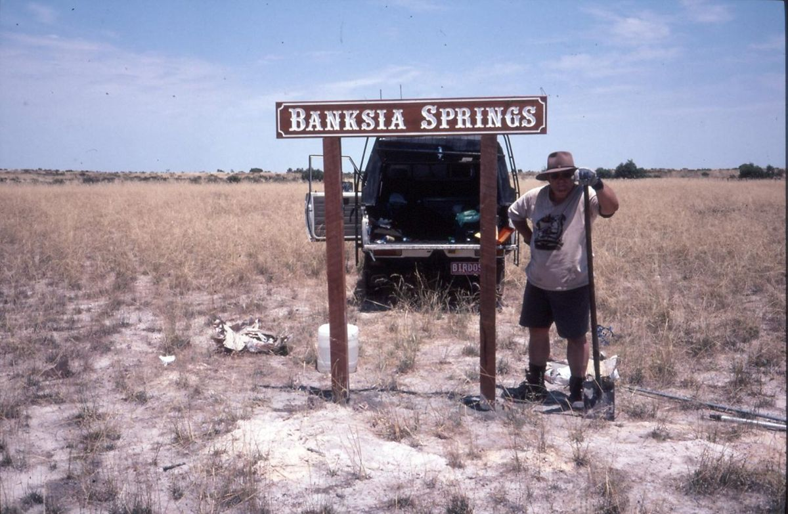
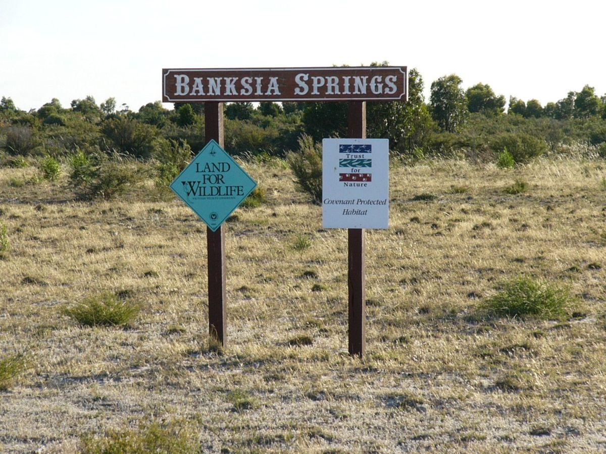
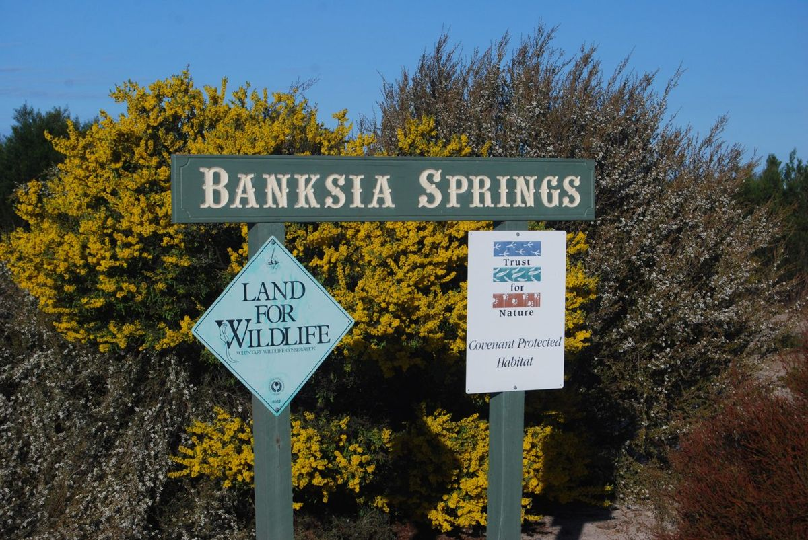

Photo points in your best country
Photo points are the cheapest monitoring there is, and the before photograph is the one you cannot go back and take.
Put them in your best country first. The richest understorey, the densest midstorey, the stand of old trees with hollows. These are the places you most want to be able to protect, and the places where knowing what was lost will matter most.
You can add more points after a fire, and you will — across badly burnt, lightly burnt and unburnt ground (3.1). But those tell you how the ground recovered. A point set up beforehand tells you what it recovered to, and whether it got back there.
Section 3.1 has the protocol: mark the standing position, frame on a fixed landmark, record the point name and date.1 Three to five points and an afternoon.

2000
2005
LaterMap the good patches while you are at it
Mark on an aerial photo where the best understorey is, where the midstorey is densest, where the old trees stand. You are recording two things: what to compare against afterwards, and what to defend first if you ever get the choice. The habitat structure survey (3.3) gives you a proper way to record those layers, and doing it once now is worth more than three times later.